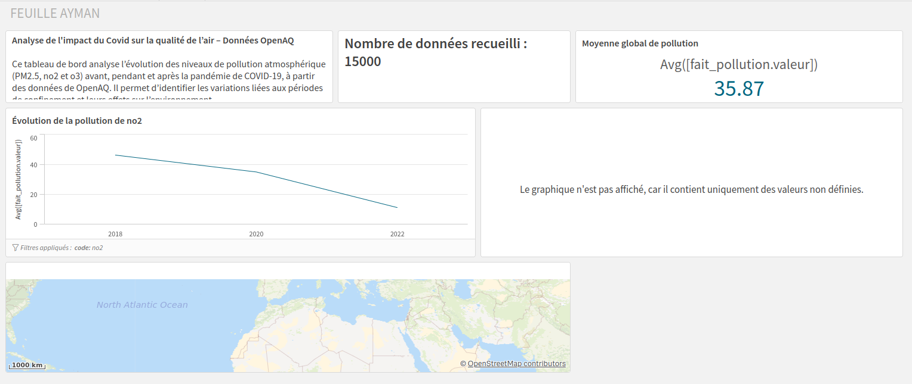

Data · Projet principal
Analyse de la qualité de l'air
Projet d'analyse de données consacré à la qualité de l'air. Le travail porte sur la préparation des données, leur exploitation avec SQL et leur restitution sous forme de visualisations.

Description
J'ai travaillé sur un jeu de données afin d'en extraire des informations exploitables. Le projet m'a amené à préparer les données, à effectuer des requêtes puis à construire des visualisations pour faire ressortir les résultats.
La partie restitution permet de passer de données brutes à des indicateurs et représentations compréhensibles.
Travail réalisé
- Préparation et nettoyage des données
- Modélisation des données
- Requêtes SQL
- Analyse des résultats
- Création de visualisations et tableaux de bord
Apprentissages critiques mobilisés
Ces apprentissages critiques sont ceux que je peux illustrer à travers ce projet. Ils sont également reliés aux autres projets dans la page Compétences.
Construction de visualisations à partir des données exploitées.
Organisation des résultats afin de produire une restitution lisible.
Organisation du modèle pour faciliter l’exploitation des données.
Preuve de progression
Je savais déjà manipuler des bases relationnelles et écrire des requêtes SQL, mais la restitution de données était moins approfondie.
J'ai appris à enchaîner préparation, exploitation et visualisation pour produire une analyse cohérente à partir d'un jeu de données.
Mobiliser ces connaissances dans un projet concret, expliquer mes choix techniques et produire une solution fonctionnelle adaptée au problème posé.